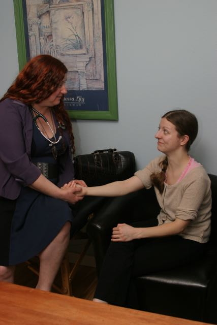

Naturopathic Services
What types of conditions does Dr. Curry treat?Naturopaths are qualified to prevent and diagnose, treat, and cure all disease, whether acute or chronic. As a licensed primary care physician, Dr. Curry can help you find what you need to address virtually every aspect of family medicine. Dr. Curry also offers preventative medicine for patients without illness hoping to improve their overall health for vital longevity. Dr. Curry will also work with you to identify and address mental/emotional/spiritual stressors that may be contributing to your disease states. Anyone who has ever been under stress with family issues, work, or medical conditions knows stress can affect the body causing symptoms from digestive problems, heart palpitations, high blood pressure, to headaches and even fatigue. Temporary treatments such as pain relievers or antacids work by masking the symptoms, not by curing the cause. Dr. Curry understands that everyone has their own healing process and meets patients where they are in their personal healing journey. Dr. Curry strives to involve patients in their own care by creating holistic treatment plans to not only address specific illness, while decreasing stress, anxiety, depression, inflammation, but also increase energy levels, sleep quality, memory, concentration and overall quality of life.
Dr. Curry believes that the body has an amazing ability to self-heal yet sometimes needs a little support and direction. Dr. Curry has particular interest in a variety of methods of wellness including herbal medicine, diet/nutrition, food as medicine, supplementation therapy, lifestyle counseling, hydrotherapy, food/environmental allergy testing via blood or saliva testing, allergy treatment, minor surgery, massage, energy-work, low-impact naturopathic manipulation, exercise therapeutics, pharmaceuticals and general medicine. Some examples of conditions treated include digestive complaints, allergies, stress, anxiety, agoraphobia, autoimmune disorders (arthritis), endocrine disorders (diabetes, hypo/er-thyroid), weight concerns, headaches, skin problems, depression, colds and flu, hypertension, fatigue, PMS and menopause, and cancer. Dr. Curry also performs women's annual exams, Pap smears, men's sensitive exams and blood draws. Dr. Curry will perform physical examinations, as well as order and interpret lab tests as needed to diagnose and treat disease. Dr. Curry also cooperates with all other branches of medical science, referring patients to other practitioners for treatment or diagnosis when appropriate. Dr. Curry wants to find the root cause of your concern, then support your body's inherent ability to heal so that you can experience optimal health. True health is more than the absence of disease; it is the balance of the mind, body, spirit, wellness, and vitality.
Therapeutic modalities offered
- Botanical Medicine
- Life Style Modifications, Counseling, and Stress Management
- Dietary and Nutritional support through whole foods nutrition
- Vitamin and Mineral Supplementation
- Fatty acid Therapy
- Amino Acid Therapy
- Neurotransmitter Therapy
- Cleansing/Detoxification
- Couples Sexual Counseling
- Sexual Counseling for Minors (basic Sex Ed or need based)
- Hydrotherapy
- Essential Oil Therapy
- Affirmation Art
- Massage, Energy Work
- Nasal Specific
- Therapeutic Exercise
- Physical Medicine
- Minor Surgery
- Pharmaceuticals
- Other Nature Cure Treatments
Services that will be provided periodically at local wellness venues:
- Health Walks
- Educational lectures on various topics
- Cooking Classes
- Hands-on botanical work shops
As a general practitioner, Dr. Curry is trained to manage most patients and most diseases, including
A few examples of acute and chronic general health concerns:
-
Acute (sudden illnesses which should be curable)
- Colds and flues
- Ear infections
- Upper respiratory tract infections
- Bladder infections
- Abdominal discomfort/pain
- Sexually transmitted infections (STI's)
- Rashes and other skin lesions
Chronic (unwellness that lasts and may progress with time)
- Diabetes Mellitus Type 1 or 2
- Hypothyroidism, Hyperthyroidism
- Adrenal stress, , Endocrine disorders
- Irritable Bowel Syndrome (IBS), Diarrhea, Constipation
- Crohn disease, Ulcerative Colitis
- Celiac disease
- Intestinal Parasites, Dysbiosis
- Acid Reflux (GERD), Heartburn, Ulcers
- Weight management
- Allergies and Intolerances
- Asthma, Bronchitis, COPD, Sinus Congestion
- Heart disease, Hypertension, Blood Clots, Varicose Veins
- Chronic Fatigue, Insomnia, Lymes Disease
- PMS and menstrual irregularities, fertility concerns
- Menopause, Natural Hormone Replacement Therapy
- Breast tenderness, lumps
- Prostate Issues, Testicular Health
- Sexual Dysfunction-male or female
- Viral STIs (Herpes, HIV, Genital Warts)
- Acne, Psoriasis, Eczema
- Emotional Issues, Anxiety, Depression
- Alzheimer's Disease
- Autoimmune Disease, arthritis, SLE
- Chronic pain, Chronic Headaches
- Environmental illness
Dr. Curry treats a variety of conditions in the comfort of your own home using a broad array of treatment modalitites. If your condition is not listed above, please give us a call and inquire about how we might be of benefit to you and your family. If you are looking to prevent disease and achieve optimal health and wellness by treating the cause, you have come to the right place! I welcome you to call 503-995-8674 to set up a Naturopathic appointment soon.
Dr. Curry sincerely thanks you for your interest in health and wellness and looks forward to working with you.
Mindy A. Curry, ND
Naturopathic Physician